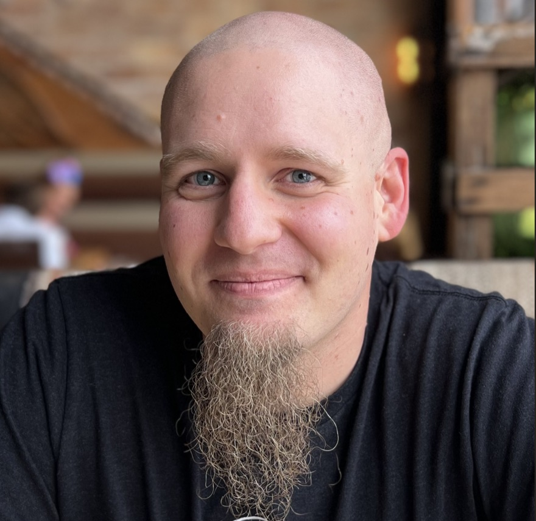

Platform re-architecture
A multimillion-dollar move from VMware to OpenStack, delivered without a customer-facing incident.
- Real-world performance
- 2-3x
- Customer density
- 2x
- Cost of goods sold
- -30%
Cygnus Strategy provides fractional CTO, CPO, CISO, and COO leadership to growth-stage technology companies. From the hardware in the rack to the AI agents in production and the security program that governs them, it is one operator across every layer, not four advisors who each stop at the boundary.
Built and led at Cytracom, Drizly (acquired by Uber), Datto (acquired by Kaseya), Incredible Health, and SimpleHealth.
Six layers a growth-stage company runs on. Open any one to see how we work there.
A team that has outgrown the structure it started with, a roadmap the board reads differently than engineering does, and an acquisition where nobody can price the technical risk. We sit on the side of the table that has to answer for it.
We take on org and hiring design, technical strategy and roadmap, board and investor communication, and diligence on either side of a deal
An enterprise deal parked on a security questionnaire, an audit nobody thought about until this quarter, and policies written for a binder nobody opens. We run security as a revenue function.
We take on program and policy design, audit readiness, customer security reviews, and the remediation roadmap behind them
A drawer full of AI pilots that demo well and never ship, because nobody can say what happens when the model is wrong. We design the bounds first: what an agent may touch, what needs a person, and what happens when it fails. That is what makes shipping it defensible.
We take on deciding where AI belongs and where it does not, agent architecture, approval and escalation design, and the evaluation to know it is working
Six backends, six ways to call them, and a data stack nobody quite trusts. We consolidate what teams build against and turn the pipelines into something the business will actually make decisions on.
We take on API and contract architecture, build-versus-buy, vendor consolidation, and the team that runs it day to day
A cloud bill growing faster than revenue, a licence renewal nobody wants to sign, and a migration that has been next quarter for a year. We move platforms without customer-visible downtime and size them to the workload they actually carry.
We take on migration strategy and execution, platform architecture, cost engineering, and the reliability practice around all three
Capacity planned by guesswork, a network nobody has fully mapped, and an outage that traces back to one box nobody knew was load-bearing. We make the physical layer boring again, which is the only state it should ever be in.
We take on capacity and hardware strategy, network design, colocation and vendor decisions, and the operations team that runs it
Four engagements, and the numbers that came out of them.
A multimillion-dollar move from VMware to OpenStack, delivered without a customer-facing incident.
A telecommunications product line moved off on-prem VMware onto Kubernetes, with call quality as the success metric.
Licensing and cloud spend treated as an engineering problem: replace the tool, right-size the platform, keep the capability.
Owning DevOps, Data, QA, Security, and IT together meant savings came from several directions at once.
Three ways to work together. The first call is thirty minutes and costs nothing.
Ongoing, part-time, in the room
A standing seat as your CTO, CPO, CISO, or COO: architecture decisions, roadmap, hiring and org design, board and investor conversations. For companies that need the judgment of a senior executive without the full-time cost of one.
Fixed scope, written findings
A clear-eyed technical audit with a prioritized remediation roadmap: pre-acquisition diligence, post-acquisition integration, or an answer to the question of where your next P0 is going to come from. Delivered as a document your board can read.
Hands on the keyboard
When the situation calls for implementation rather than advice, we go deep: platform migrations, cost reduction, compliance programs, and production AI systems built with your engineers so the capability stays after we leave.

Cygnus Strategy is a small consultancy led by Jonathan Roemer, a systems architect who has spent fifteen years building and running every layer above. Small is the point: you work with the person doing the work, not an account manager with a delivery team behind him.
It is also why the advice stays current. We are still shipping production systems every week, so the advice comes from current practice.
We work best with growth-stage companies that have outgrown their first architecture and their first set of processes, and that need someone who can hold product, infrastructure, and security in the same conversation.
Jonathan is a rare technical leader with a warm, empathetic leadership style. He's able to accurately assess the security and operational efficiency of your team, product, and company, then lay down his assessment accompanied by a pragmatic set of recommendations. Even when his recommendations are going to be hard to achieve, his engaging leadership style will win over the stakeholders needed to get the work done.
What sets Jonathan apart is not just his technical prowess but also his exceptional interpersonal skills. He fosters an environment of trust and open communication. One of his most impressive qualities is his knack for gaining buy-in and influence. He has a natural ability to articulate the importance of security measures to both technical and non-technical stakeholders.
Jonathan brings a vibrant energy to the IT world, as well as an exceptional skillset. His suggestions and insights into our processes and internal products helped pave the way to not only reduce risks in Security but also streamline execution for some of the company's most critical structural components. Jonathan brings bright ideas to the table and is ready to waste no time implementing them.
The questions that come up on most first calls.
Having written and enforced SOC 2 and HIPAA policies at multiple organizations, we hold ourselves to the standard we recommend.
Bring the problem you have been putting off. Thirty minutes, no pitch, and a straight answer about whether we are the right help.
Book a 30-minute callPrefer email? win@cygnusstrategy.com